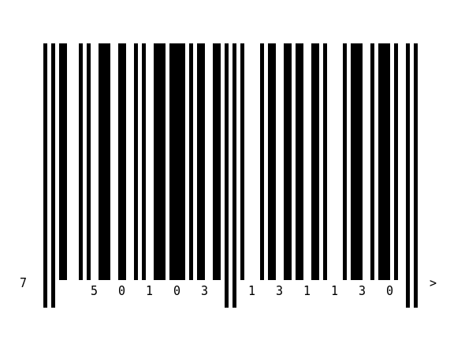
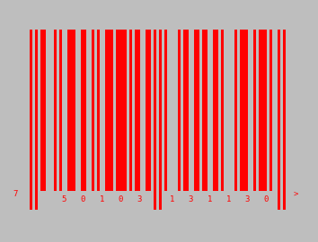
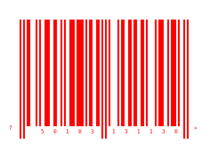
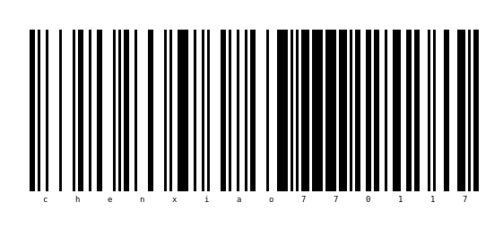
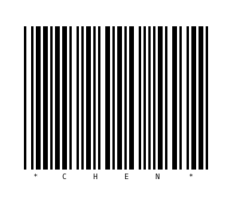
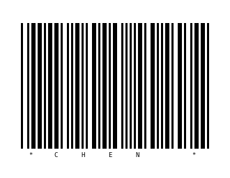

3 Png Example
#lang racket (require simple-barcode) (barcode-write 'png "750103131130" "barcode_ean13.png")
(barcode-write 'png "750103131130" "barcode_ean13_w5.png" #:brick_width 5)

(barcode-write 'png "750103131130" "barcode_ean13_w10.png" #:brick_width 10 #:font_size 6)

(barcode-write 'png "750103131130" "barcode_ean13_color.png" #:color_pair '("red" . "gray"))

(barcode-write 'png "750103131130" "barcode_ean13_trans.png" #:color_pair '("red" . "transparent"))

(printf "~a,~a,~a,~a\n" (barcode-read "barcode_ean13.png") (barcode-read "barcode_ean13_w5.png") (barcode-read "barcode_ean13_color.png") (barcode-read "barcode_ean13_trans.png")) (barcode-write 'png "chenxiao770117" "barcode_code128.png" #:code_type 'code128)

(printf "~a\n" (barcode-read "barcode_code128.png" #:code_type 'code128)) (barcode-write 'png "CHEN" "barcode_code39.png" #:code_type 'code39)

(printf "~a\n" (barcode-read "barcode_code39.png" #:code_type 'code39)) (barcode-write 'png "CHEN" "barcode_code39_checksum.png" #:code_type 'code39_checksum)

(printf "~a\n" (barcode-read "barcode_code39_checksum.png" #:code_type 'code39_checksum))